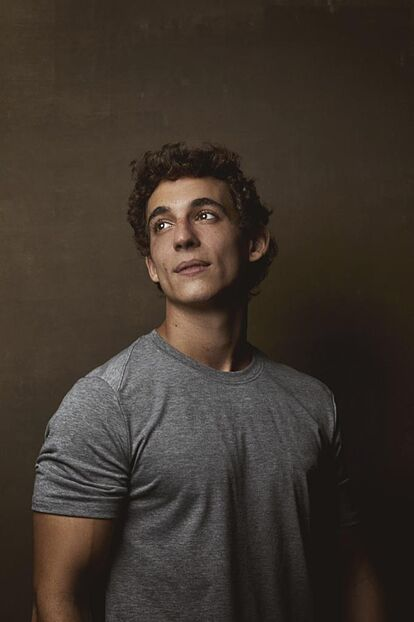
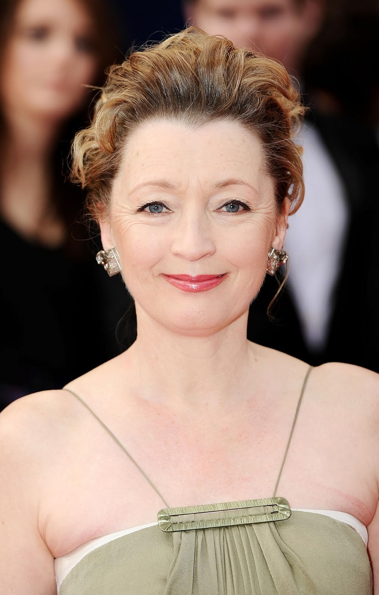

Actores Principales
Algunos de los actores más destacados en las series son:
Breaking Bad
- Bryan Cranston como Walter White

- Aaron Paul como Jesse Pinkman
- Anna Gunn como Skyler White
- Dean Norris como Hank Schrader
La Casa de Papel
- Úrsula Corberó como Tokio
- Álvaro Morte como El Profesor
- Itziar Ituño como Lisboa

- Pedro Alonso como Berlín
- Miguel Herrán como Río
 - Jaime Lorente como Denver
The Crown
- Claire Foy como la Reina Isabel II (Temporadas 1-2)
- Olivia Colman como la Reina Isabel II (Temporadas 3-4)
- Imelda Staunton como la Reina Isabel II (Temporadas 5-6)
- Matt Smith como el Príncipe Felipe (Temporadas 1-2)
- Tobias Menzies como el Príncipe Felipe (Temporadas 3-4)
- Jonathan Pryce como el Príncipe Felipe (Temporadas 5-6)
- Vanessa Kirby como la Princesa Margarita (Temporadas 1-2)
- Helena Bonham Carter como la Princesa Margarita (Temporadas 3-4)
- Lesley Manville como la Princesa Margarita (Temporadas 5-6)

Juego de Tronos
- Peter Dinklage como Tyrion Lannister

- Lena Headey como Cersei Lannister
- Kit Harington como Jon Snow

- Emilia Clarke como Daenerys Targaryen
- Sophie Turner como Sansa Stark
- Maisie Williams como Arya Stark
Peaky Blinders
- Cillian Murphy como Thomas Shelby
- Paul Anderson como Arthur Shelby
- Helen McCrory como Polly Gray
- Joe Cole como John Shelby
- Sophie Rundle como Ada Thorne

"Peter Dinklage, Lena Headey y Emilia Clarke fueron actores clave en Juego de Tronos, interpretando a Tyrion Lannister, Cersei Lannister y Daenerys Targaryen, respectivamente."